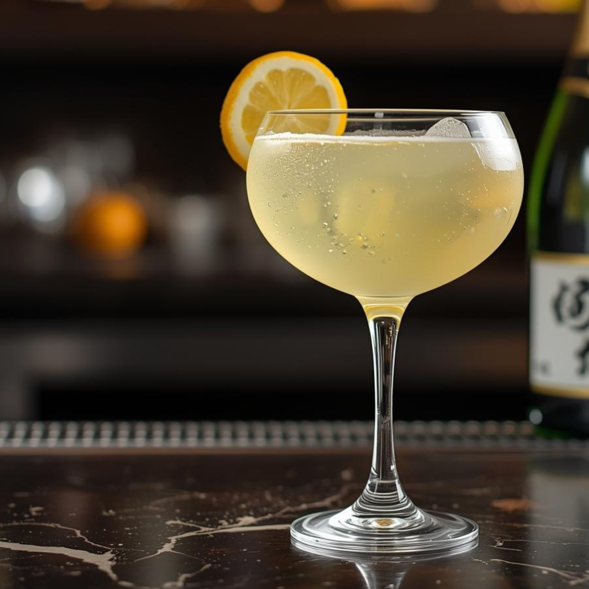

Japan Spritz 🍹
Un spritz délicat aux accents japonais, où la finesse du saké rencontre l’intensité citronnée du yuzu, sublimée par la légèreté des bulles. Frais, élégant et subtilement exotique.

🥃 Ingrédients
- 4 cl Saké
- 3 cl Purée de yuzu
- 3 cl Eau gazeuse
- 4 cl Prosecco
🍸 Verre
 Ballon
Ballon
🧊 Préparation
 Direct au verre
Direct au verre
- Remplir le verre de glace
- Ajouter le saké et la purée de yuzu
- Compléter avec le prosecco puis l’eau gazeuse
- Mélanger délicatement
✨ Décoration
- Citron — 2½ tranches